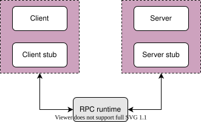
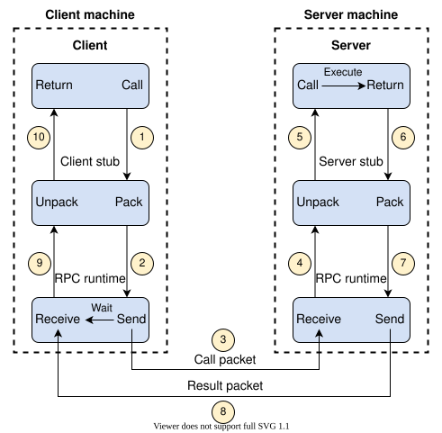
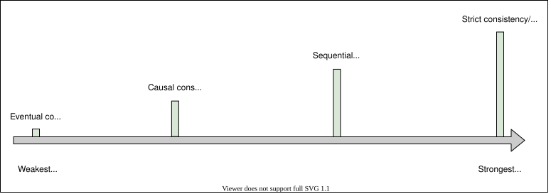
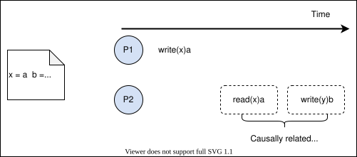
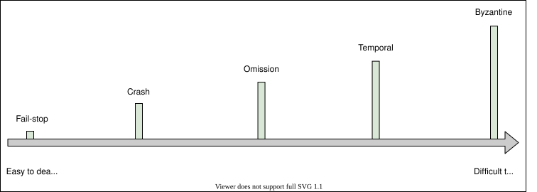

3. Abstractions
Why Are Abstractions Important?
Why Are Abstractions Important?
Explore the importance of abstraction.
We'll cover the following
What is abstraction?#
Abstraction is the art of obfuscating details that we don’t need. It allows us to concentrate on the big picture. Looking at the big picture is vital because it hides the inner complexities, thus giving us a broader understanding of our set goals and staying focused on them. The following illustration is an example of abstraction.
With the abstraction shown above, we can talk about birds in general without being bogged down by the details.
Note: If we had drawn a picture of a specific bird or its features, we wouldn’t achieve the goal of recognizing all birds. We’d learn to recognize a particular type of bird only.
In the context of computer science, we all use computers for our work, but we don’t start making hardware from scratch and developing an operating system. We use that for the purpose at hand rather than digging into building the system.
The developers use a lot of libraries to develop the big systems. If they start building the libraries, they won’t finish their work. Libraries give us an easy interface to use functions and hide the inside detail of how they are implemented. A good abstraction allows us to reuse it in multiple projects with similar needs.
Database abstraction#
Transactions is a database abstraction that hides many problematic outcomes when concurrent users are reading, writing, or mutating the data and gives a simple interface of commit, in case of success, or abort, in case of failure. Either way, the data moves from one consistent state to a new consistent state. The transaction enables end users to not be bogged down by the subtle corner-cases of concurrent data mutation, but rather concentrate on their business logic.
Abstractions in distributed systems#
Abstractions in distributed systems help engineers simplify their work and relieve them of the burden of dealing with the underlying complexity of the distributed systems.
The abstraction of distributed systems has grown in popularity as many big companies like Amazon AWS, Google Cloud, and Microsoft Azure provide distributed services. Every service offers different levels of agreement. The details behind implementing these distributed services are hidden from the users, thereby allowing the developers to focus on the application rather than going into the depth of the distributed systems that are often very complex.
Today’s applications can’t remain responsive/functional if they’re based on a single node because of an exponentially growing number of users. Abstractions in distributed systems help engineers shift to distributed systems quickly to scale their applications.
Note: We’ll see the use of abstractions in communications, data consistency, and failures in this chapter. The purpose is to convey the core ideas, but not necessarily all the subtleties of the concepts.
Network Abstractions: Remote Procedure Calls
Network Abstractions: Remote Procedure Calls
Look into what remote procedure calls are and how they help developers.
We'll cover the following
Remote procedure calls (RPCs) provide an abstraction of a local procedure call to the developers by hiding the complexities of packing and sending function arguments to the remote server, receiving the return values, and managing any network retries.
What is an RPC?#
RPC is an interprocess communication protocol that’s widely used in distributed systems. In the OSI model of network communication, RPC spans the transport and application layers.
RPC mechanisms are employed when a computer program causes a procedure or subroutine to execute in a separate address space.
Note: The procedure or subroutine is coded as a regular/local procedure call without the programmer explicitly coding the details for the remote interaction.
How does RPC work?#
When we make a remote procedure call, the calling environment is paused and the procedure parameters are sent over the network to the environment where the procedure is to be executed.
When the procedure execution finishes, the results are returned to the calling environment where execution restarts as a regular procedure call.
To see how it works, let’s take an example of a client-server program. There are five main components involved in the RPC program, as shown in the following illustration:

The client, the client stub, and one instance of RPC runtime are running on the client machine. The server, the server stub, and one instance of RPC runtime are running on the server machine.
During the RPC process, the following steps occur:
- A client initiates a client stub process by giving parameters as normal. The client stub is stored in the address space of the client.
- The client stub converts the parameters into a standardized format and packs them into a message. After packing the parameter into a message, the client stub requests the local RPC runtime to deliver the message to the server.
- The RPC runtime at the client delivers the message to the server over the network. After sending a message to the server, it waits for the message result from the server.
- RPC runtime at the server receives the message and passes it to the server stub.
Note: The RPC runtime is responsible for transmitting messages between client and server via the network. The responsibilities of RPC runtime also include retransmission, acknowledgment, and encryption.
- The server stub unpacks the message, takes the parameters out of it, and calls the desired server routine, using a local procedure call, to do the required execution.

- After the server routine has been executed with the given parameters, the result is returned to the server stub.
- The server stub packs the returned result into a message and sends it to the RPC runtime at the server on the transport layer.
- The server’s RPC runtime returns the packed result to the client’s RPC runtime over the network.
- The client’s RPC runtime that was waiting for the result now receives the result and sends it to the client stub.
- The client stub unpacks the result, and the execution process returns to the caller at this point.
Note: Back-end services use RPC as a communication mechanism of choice due to its high performance and simple abstraction of calling remote code as local functions.
Summary#
The RPC method is similar to calling a local procedure, except that the called procedure is usually executed in a different process and on a different computer.
RPC allows developers to build applications on top of distributed systems. Developers can use the RPC method without knowing the network communication details. As a result, they can concentrate on the design aspects, rather than the machine and communication-level specifics.
Spectrum of Consistency Models
Spectrum of Consistency Models
Learn about consistency models and see which model suits the requirements of our application.
What is consistency?#
In distributed systems, consistency may mean many things. One is that each replica node has the same view of data at a given point in time. The other is that each read request gets the value of the recent write. These are not the only definitions of consistency, since there are many forms of consistency. Normally, consistency models provide us with abstractions to reason about the correctness of a distributed system doing concurrent data reads, writes, and mutations.
If we have to design or build an application in which we need a third-party storage system like S3 or Cassandra, we can look into the consistency guarantees provided by S3 to decide whether to use it or not. Let’s explore different types of consistency.
The two ends of the consistency spectrum are:
- Strongest consistency
- Weakest consistency
There are consistency models that lie between these two ends, some of which are shown in the following illustration:

There is a difference between consistency in ACID properties and consistency in the CAP theorem.
Database rules are at the heart of ACID consistency. If a schema specifies that a value must be unique, a consistent system will ensure that the value is unique throughout all actions. If a foreign key indicates that deleting one row will also delete associated rows, a consistent system ensures that the state can’t contain related rows once the base row has been destroyed.
CAP consistency guarantees that, in a distributed system, every replica of the same logical value has the same precise value at all times. It’s worth noting that this is a logical rather than a physical guarantee. Due to the speed of light, replicating numbers throughout a cluster may take some time. By preventing clients from accessing different values at separate nodes, the cluster can nevertheless give a logical picture.
Eventual consistency#
Eventual consistency is the weakest consistency model. The applications that don’t have strict ordering requirements and don’t require reads to return the latest write choose this model. Eventual consistency ensures that all the replicas will eventually return the same value to the read request, but the returned value isn’t meant to be the latest value. However, the value will finally reach its latest state.
Eventual consistency ensures high availability.
Example
The domain name system is a highly available system that enables name lookups to a hundred million devices across the Internet. It uses an eventual consistency model and doesn’t necessarily reflect the latest values.
Note: Cassandra is a highly available NoSQL database that provides eventual consistency.
Causal consistency#
Causal consistency works by categorizing operations into dependent and independent operations. Dependent operations are also called causally-related operations. Causal consistency preserves the order of the causally-related operations.
In the following illustration, process P1 writes a value a at location x. For P2 to write the value b at location y, it first needs to calculate b. Since b=x+5, the read operation on x should be performed before writing b on location y. That’s why read(x)a and write(y)b are causally related.

This model doesn’t ensure ordering for the operations that are not causally related. These operations can be seen in different possible orders.
Causal consistency is weaker overall, but stronger than the eventual consistency model. It’s used to prevent non-intuitive behaviors.
Example
The causal consistency model is used in a commenting system. For example, for the replies to a comment on a Facebook post, we want to display comments after the comment it replies to. This is because there is a cause-and-effect relationship between a comment and its replies.
Note: There are many consistency models other than the four discussed in this lesson, and there is still room for new consistency models. Researchers have developed new consistency models. For example, Wyatt Lloyd, et al., proposed the causal+consistency model to speed up some specific types of transactions.
Sequential consistency#
Sequential consistency is stronger than the causal consistency model. It preserves the ordering specified by each client’s program. However, sequential consistency doesn’t ensure that the writes are visible instantaneously or in the same order as they occurred according to some global clock.
Example
In social networking applications, we usually don’t care about the order in which some of our friends’ posts appear. However, we still anticipate a single friend’s posts to appear in the correct order in which they were created). Similarly, we expect our friends’ comments in a post to display in the order that they were submitted. The sequential consistency model captures all of these qualities.
Strict consistency aka linearizability#
A strict consistency or linearizability is the strongest consistency model. This model ensures that a read request from any replicas will get the latest write value. Once the client receives the acknowledgment that the write operation has been performed, other clients can read that value.
Linearizability is not obvious in a distributed system. This is shown in the following illustration:
Synchronous replication ensures linearizability, in which an acknowledgment is not sent to the client until the new value is written to all replicas.
Linearizability affects the system’s availability, which is why it’s not always used. Applications with strong consistency requirements use techniques like quorum-based replication to increase the system’s availability.
Example
Updating an account’s password requires strict consistency. For example, if we suspect suspicious activity on our bank account, we immediately change our password so that no unauthorized users can access our account. If it were possible to access our account using an old password due to a lack of strict consistency, then changing passwords would be a useless security strategy.
Note: Amazon Aurora provides strong consistency.
Summary#
Linearizable services appear to carry out transactions/operations in sequential, real-time order. They make it easier to create suitable applications on top of them by limiting the number of values that services can return to application processes.
Linearizable services have worse performance rates than services with weaker consistency in exchange for their strong assurances. Think about a read in a key-value store that returns the value written by a concurrent write. The read imposes no limits on future reads if the key-value store is weakly consistent.
Application programmers have to compromise performance and availability if they use services with strong consistency models. The models may break the invariants of applications built on top of them in exchange for increased performance.
The Spectrum of Failure Models
The Spectrum of Failure Models
Learn about failures in distributed systems and the complexity of dealing with them.
We'll cover the following
Failures are obvious in the world of distributed systems and can appear in various ways. They might come and go, or persist for a long period.
Failure models provide us a framework to reason about the impact of failures and possible ways to deal with them.
Here is an illustration that presents a spectrum of different failure models:

Fail-stop#
In this type of failure, a node in the distributed system halts permanently. However, the other nodes can still detect that node by communicating with it.
From the perspective of someone who builds distributed systems, fail-stop failures are the simplest and the most convenient.
Crash#
In this type of failure, a node in the distributed system halts silently, and the other nodes can’t detect that the node has stopped working.
Omission failures#
In omission failures, the node fails to send or receive messages. There are two types of omission failures. If the node fails to respond to the incoming request, it’s said to be a send omission failure. If the node fails to receive the request and thus can’t acknowledge it, it’s said to be a receive omission failure.
Temporal failures#
In temporal failures, the node generates correct results, but is too late to be useful. This failure could be due to bad algorithms, a bad design strategy, or a loss of synchronization between the processor clocks.
Byzantine failures#
In Byzantine failures, the node exhibits random behavior like transmitting arbitrary messages at arbitrary times, producing wrong results, or stopping midway. This mostly happens due to an attack by a malicious entity or a software bug. A byzantine failure is the most challenging type of failure to deal with.